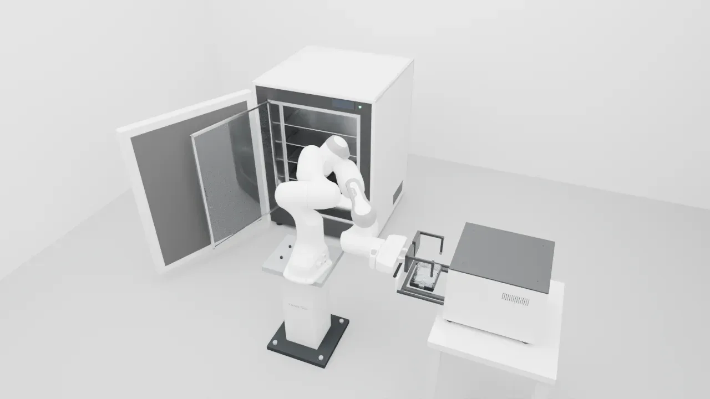
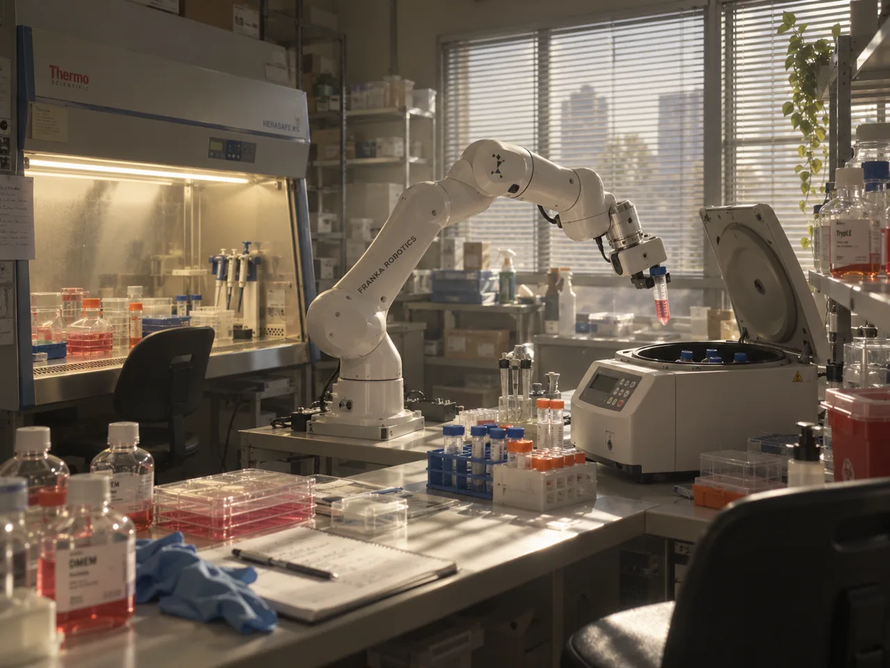
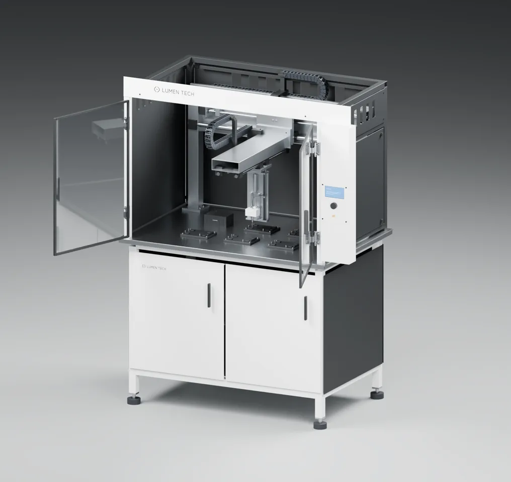
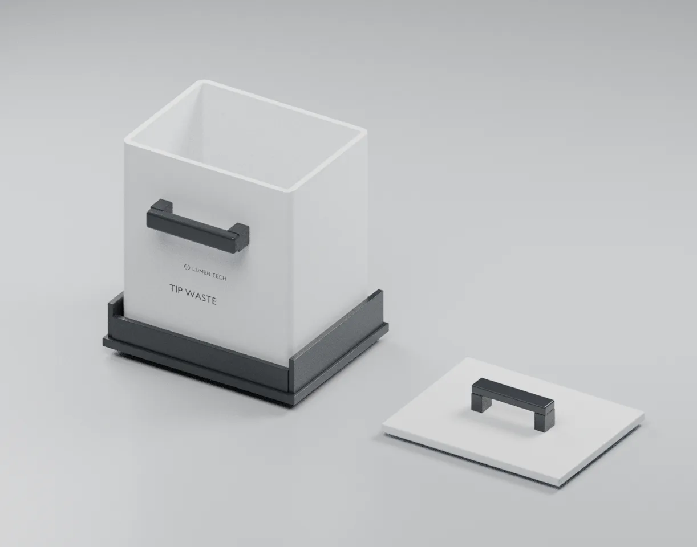

细胞传代黑灯实验室：完整场景、流程和资产都包括什么
这一页不是方案，而是在开工前把"要做的东西"摊开给你确认：实验室里有哪些区域和设备，一次传代分哪几步、每一步在哪里由谁完成，每样资产从哪里来、现在是什么状态。确认之后，我再做带运动学预演的正式方案预览（审批点①）。
01一页看懂
一个 Panda 沿导轨在 5 个区域之间搬运，移液交给工作站里的龙门移液头，离心管盖交给开盖器。只做机械物理，液体和细胞只记在动作日志里。
- 1104 没有机器人导轨。我之前说的"R05 导轨"其实是废吸头盒下沉安装的承托轨，所以导轨要新建。
- 1104 的移液工作站自带透明双门外罩（外廓约 1.35 × 0.84 × 1.77 m，内有 XYZ 龙门、单通道移液头、吸头架）。它本身就是一个封闭的洁净操作工位，可以不再单独做生物安全柜（见决定 D3）。
- 离心机、工作站、移液头三份 MJCF 都缺网格（分别缺 165/167、32/32、1007/4101 个）。Blender 源文件是完整的，可以补回，但在补齐并重新验证之前不能算"可用"。
02场景：实验室里有什么
下图只表示区域和搬运关系，不是布局。真实位置、导轨长度、朝向由方案预览阶段的运动学预演决定。


03流程：一次传代的 14 步
合并成一个样本：母板、子板、计数板各 1 块，离心管 1 支加配平管 1 支，离心 1 次。"区域"一列对应上图的字母。保真度：物理＝真实接触与支撑；理想化＝机械动作是物理的，但小件夹持用约束、液体只记日志；符号化＝只有等待和标注。
| # | 工艺步骤 | 区域 | 由谁完成 | 搬运了什么 | 保真度 | 难度 |
|---|---|---|---|---|---|---|
| 1 | 培养箱开门，取出母板，关门 （薄切片 01 已做过） | A | 培养箱执行器、Panda | 母板（带盖） | 物理 | L3 |
| 2 | 母板送观察站，抽屉收回，观察 （已做过） | B | Panda、观察站抽屉 | 母板 | 物理 | L3 |
| 3 | 母板取出，送进工作站板位；取下板盖放暂存位 | B→C | Panda、工作站门执行器 | 母板、板盖 | 物理 | L3 |
| 4 | 去旧液、PBS 清洗（取吸头 → 吸 → 排废液 → 弃吸头） | C | 龙门移液头 | 吸头 | 理想化 | L3 |
| 5 | 加解离液，教学等待（画面标注时长） | C | 龙门移液头 | 吸头 | 符号化 | L2 |
| 6 | 空离心管在开盖器开盖、放进工作站管架；加终止液，收集到离心管 | D→C | 开盖器、Panda、移液头 | 离心管、吸头 | 理想化 | L4 |
| 7 | 离心管送开盖器盖盖；和配平管一起装进离心机 | C→D | Panda、开盖器 | 离心管、配平管 | 理想化 | L4 |
| 8 | 离心机关盖、转子转动（教学时长）、停稳、开盖 | D | 离心机执行器 | — | 物理 | L2 |
| 9 | 取出两支管；离心管开盖后放回工作站管架，配平管回架 | D→C | Panda、开盖器 | 离心管、配平管 | 理想化 | L4 |
| 10 | 去上清，加培养基重悬、混匀 | C | 龙门移液头 | 吸头 | 理想化 | L3 |
| 11 | 取样到计数板；计数板送观察站计数（结果只作标注） | C→B | 移液头、Panda、观察站 | 计数板 | 理想化 | L3 |
| 12 | 子板开盖，分液接种 | C | Panda、移液头 | 子板盖、吸头 | 理想化 | L3 |
| 13 | 子板盖盖，送回培养箱，关门 | C→A | Panda、培养箱执行器 | 子板 | 物理 | L3 |
| 14 | 废物收尾：母板、计数板进废物箱；Panda 回停靠位；设备复位 | C/B→E | Panda、各设备执行器 | 母板、计数板 | 物理 | L3 |
最难的是第 6、7、9 步（L4）
离心管直径约 17 mm，而薄切片 01 的偏置宽指最小开口 110 mm，夹不住管。可选办法有三种：给 Panda 加换指工位；在宽指内侧加一对夹管槽；或者用开盖器和管架上的定位结构减少单管搬运。由我在运动学预演里比较后决定，结论写进方案预览。
分期（暂定）
- 步骤 1–3：搬运与进工作站（在薄切片 01 基础上加导轨）
- 步骤 4–6、10、12：工作站内移液
- 步骤 6–9：开盖与离心
- 步骤 11、13、14：计数、回培养、收尾
- 完整运行一次，出完整成片
04资产：每样东西从哪里来、现在什么状态
已验证 薄切片 01 用物理仿真跑通过。需审查 有候选，但缺文件或部分功能未通过。新建 没有可用候选。参考 只看不用。

培养箱 已验证
- 外门、内玻璃门（左铰链）、4 层隔板，门由执行器驱动
- 只需按新布局重新摆放
观察站 已验证
- 抽屉 0–190 mm，托槽已开 20 mm 槽
- 兼作计数站；光学只是占位，观察 / 计数结果只作标注
六孔板与盖 已验证
- 板、盖都是自由刚体；盖裙把盖锁得很牢（N3 探针实测）
Panda + 偏置宽指 已验证
- 宽指开口 110–190 mm，专夹板
- 缺口：夹不住离心管，夹管方式待预演决定
线性导轨 + 底座 新建
- 长度、行程、高度由预演决定
- 导轨滑台用执行器驱动，机器人随滑台移动

移液工作站 需审查
- 透明双门外罩、XYZ 龙门、单通道移液头、吸头架；900 mm 台面
- MJCF 缺 32/32 个网格；源文件说明里"取 / 退吸头"标为 BLOCKED，我们按约定理想化
- 可兼当洁净操作区（见 D3）

移液头细节 需审查
- 58.35 mm 中空吸头、喷嘴、退吸头套筒的几何很细
- MJCF 缺 1007/4101 个网格；仿真只需要它的外形和行程，细节主要用于渲染

离心机 需审查
- 8 孔转子、15 mL 级原创管与适配器、盖开到 100°；有独立复核
- MJCF 缺 165/167 个网格；只验证过 9 秒低速运行
- 盖和转子要补执行器

废吸头盒 需审查
- MJCF 能直接编译，做过落料测试
- 盒沿比工作站台面高，1104 已评估过"台面开孔下沉安装"方案

离心管、配平管、管架 部分复用
- 管身、管盖拆成独立刚体（开盖器要用）
- 管架新建，要同时适配工作站台面和开盖器
开盖器 新建
- 执行器驱动；管盖在几何对准后用约束挂上（理想化）
储液槽、废液槽、吸头盒 新建
- 液体不模拟，槽里的液面只做视觉
固体废物箱 新建
- 带开口的箱体，板从上方放入
房间与台面 新建
- 简单几何，正常照明（不做黑灯氛围）
生物安全柜 视 D3 而定
- 如果由移液工作站兼任，这一项就不做
05和 spatial-sync 未完成场景的关系
它做的是同一件事（完整细胞传代），但目标和做法不同。下表说明我们拿它什么、不拿什么。
| spatial-sync（cell-passage 分支） | 本项目 | |
|---|---|---|
| 引擎与平台 | Newton；Web 控制、暂停、人工接管、控制代次 | MuJoCo + Blender；只出仿真结果和成片 |
| 样本 | 6 个孔各自独立，分到 12 个子孔；84 个吸头；离心两批 | 合并成 1 份；离心 1 次 |
| 实验状态 | 细胞数、液量守恒（误差 1e-6），逐孔可追溯 | 不建模，只记动作日志 |
| 机器人 | FR3 + 导轨（官方 FR3 网格） | Panda + 导轨（Menagerie，Apache-2.0） |
| 资产 | 32 个素材包大多是陈设（Dressing），没有碰撞；fr3-culture-lab 是视觉 Blender 源 | 以薄切片 01 和 1104 的物理资产为主 |
| 结果 | 模型 153 个 body、8543 个碰撞体；完整跑通 0 次，视频没出，已被叫停 | — |
| 我们拿什么 | 工艺顺序、设备清单、布局思路（导轨串联各工位）、它踩过的坑（管架间距、开管盖、搬运路线）。不复用它的代码和资产。另外，规格里提到的外部 assets02 包在本机没有找到，如果你需要用它，请告诉我位置。 | |
06需要你确认的 4 个决定
每项都附了我的推荐。工程细节（尺寸、布局、夹管方式）不在这里问，由我在方案预览里决定并给出证据。
D1 场景和流程有没有要增删的？
比如：加冰箱（试剂冷藏）、试剂柜、显微镜、水浴锅？加了会不会参与流程？
D2 spatial-sync 的场景怎么用？
(a) 只参考它的流程、设备清单和布局思路；(b) 直接复用它的资产和布局（FR3、它的安全柜和离心机模型等）。
D3 洁净操作区：用移液工作站兼任，还是单独做生物安全柜？
真实实验室里传代在生物安全柜里做。1104 的移液工作站有透明双门外罩，可以当作"封闭的自动化洁净工位"。
D4 打 的资产怎么处理？
离心机、移液工作站、移液头、废吸头盒、离心管。
07你确认之后
- 按你的答复更新需求记录（场景、流程、资产三张清单）。
- 完成
wb preflight（运动学预演工具），还剩最后 1 处误报：过渡段构型搜索。 - 做正式方案预览：全实验室布局、运动学预演结论、资产审查结论、分期，交审批点①。